Плаж Обзор - Пътеводител
За Обзор
Обзор е дестинация по българското Черноморие. Това място предлага пясъчен плаж, летни удобства, което го прави идеално за плажни туристи, семейства. Българското Черноморие простира на 378 километра и Обзор има своя уникален характер и атракции.
Какво да очаквате
Градският плаж на Obzor е достъпен за местни и туристи с добра основна инфраструктура. Градът предлага истински български ресторанти с местна кухня на разумни цени, магазини, пазари и възможност да видите ежедневния живот на местното население. Атмосферата е по-автентична от курортната.
Как да стигнете и практична информация
Obzor е достъпен с редовни автобуси от основните градове. Настаняването включва градски хотели и частни квартири (40-100 лв/нощувка). Градът предлага пълна инфраструктура - банки, аптеки, магазини, болница. Цените за храна и услуги са по-ниски от курортните зони.
Близки атракции
Освен плажа, посетителите могат да разгледат околните забележителности. Българският бряг съчетава природна красота с исторически места, традиционни села и възможности за туризъм, водни спортове и културни преживявания.
Най-добро време за посещение
Юни и септември предлагат отлично време с по-малко туристи и по-добри цени в сравнение с пиковите юли-август. Водата е достатъчно топла за комфортно плуване от средата на юни до средата на септември. За най-тихото преживяване и най-добра стойност, помислете за края на май или началото на октомври.
Съвети за посетители
Фотогалерия
Разгледайте нашата колекция от снимки от Обзор, показващи плажа, съоръженията и атмосферата. Тези автентични изображения ви помагат да разберете какво да очаквате и да планирате посещението си ефективно.
- 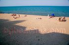
Перфектно време - 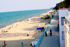
Пуст - 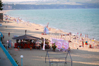
През юни - 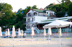
Ретро - 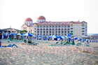
Хотел - 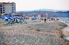
Още хотели - 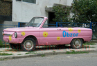
Наточена кола - 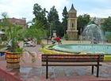
Центъра на Обзор - 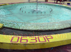
Фонтан - 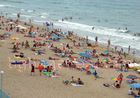
Плаж - 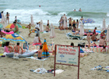
Платена зона - 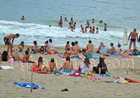
Ученически лагер - 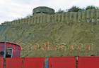
Бункер - 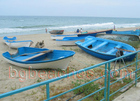
Лодки - 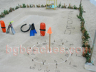
Спасителски пост - 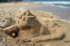
Замък - 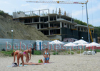
Строеж на плажа - 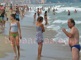
Момичета на плажа - 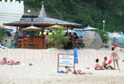
Бар на плажа - 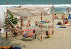
Разпускане - 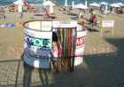
Съблекалня на плажа - 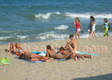
Паника - 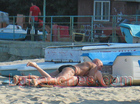
Масаж - 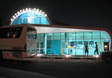
Автогарата - 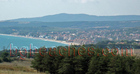
Поглед отгоре